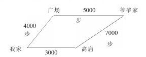
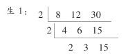
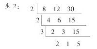
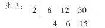
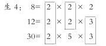

第一学段（1-3年级）数学课程改革实验回顾与反思——国家基础教育课程改革灵武实验区小学数学课程实验专题总结 [1] ——国家基础教育课程改革灵武实验区小学数学课程实验专题总结
小学第一学段数学课程改革首轮实验历时三年，已结束了。回顾三年来的学习、工作、经历，我们感慨万分。面对千载难逢的课改机遇，实验班教师以满腔的热情迎接，以理智的头脑思考，以奉献的精神投入，大胆实践，积极探索，尝试感悟，取得了令人欣慰的成效。我们的共同感受是有耕耘就有收获，有付出就有回报，同时也感到了喜悦后更大的困惑与挑战。
一、主要变化
这次国家基础教育课程改革，要致力于教学方式的转变、学习方式的转变、评价方式的转变及管理方式的转变。三年来，这些方面的转变在灵武实验区显而易见。
（一）教学方式的转变
教学方式的转变决定着学生学习方式的转变。三年来，实验班教师遵照“一切为了学生的全面发展”的宗旨，着力于自己角色地位的改变。起初，有些教师搬掉了讲桌，走下了讲台；有的班级重新摆放桌凳，尽量给学生提供小组合作学习与交流的平台。后来，随着教师认识水平的不断提高，随着课改的不断深入，一些形式的、外显的做法越来越少，取而代之的是教师教学方式的实质性转变。体现在：
1.教师主宰课堂的局面已打破，学生真正成为学习的主人
课堂上教师精心组织教学活动，情境创设后让学生观察、实验、思考、探索，让学生提出问题、分析问题，让学生质疑、问难，让学生表达、交流，让学生概括、总结，让学生联系实际进行解释与应用。这样就把学生推向了学习的主体地位，学生真正成为学习的主人。
2.传统的教学模式已打破，数学课堂变得有趣、活泼
现在的课堂教学一改过去“复习铺垫—引入新课—进行新课—练习巩固—归纳小结”的传统教学模式，而为“创设情境—建立数学模型—解释与应用”的教学新思路。课堂上教师为学生创设了丰富、形象的情境，有的充满着神秘的童话色彩，有的洋溢着浓厚的生活气息，还有的充满着强烈的探索性。从上课开始，这样的情境就吸引着学生，引导着学生从自己熟悉的生活和经验开始走进数学世界。数学课堂充满着生气和活力。
3.民主、和谐、平等的课堂教学氛围逐渐形成
数学课堂的氛围如何，直接影响着学生数学活动的参与度，影响着学生学习数学的质量，影响着学生良好学习习惯的养成。因此，《数学课程标准》呼唤形成民主、和谐、平等的教学氛围。现在许多教师走下讲台，俯下身子参与学生的活动，与他们亲切交流，时时处处用发展的眼光看待他们，赞赏他们的点滴进步，鼓励他们克服自身的不足，使学生切实感受到教师的亲和力、教师是自己的良师益友，从而无拘无束地展示自我，课堂已成为孩子灵感涌动的空间，潜能发挥的平台。
4.教师十分注重三维目标的落实
数学教学是数学活动的教学，现在教师十分注重让学生参与数学活动，鼓励学生通过自己的观察、实验、思考、交流、探索等丰富多彩的活动来获得知识，使结论和过程有机融合起来，知识和能力和谐发展，与此同时还关注学生的情感态度，努力使学生在获得知识和方法的同时，情感、态度、价值观也得到发展。
5.教学内容向生活回归，向学生经验回归
过去，教师把教材视为“圣经”，不敢越雷池一步；现在教师则根据《数学课程标准》所指出的“学生的数学学习内容应当是现实的、有意义的、富有挑战性的”要求，灵活地处理教材，大胆地创造性使用教材，充分挖掘、开发和利用当地的各种课程资源为我所用。农村养牛、养羊的示范基地，退耕还林植树棵数、个人饲养的家禽家畜，家庭的摆设、用品，学生的数学日记及已有知识积累等都成了鲜活的教学内容。由于这些内容贴近生活、来自于身边，因此，学生倍感亲切。现在学生感受最深的就是数学就在自己的身边，自己身边处处有数学问题，学习数学后就能解决实际问题。
（二）学习方式的转变
由于教学方式转变的引领，学生的学习方式发生了根本性的变化，过去那种学生在课堂上只是“听课、做练习、完成作业”的单一的学习方式一去不复返。学生独立思考、自主探索及师生、学生之间合作交流等重要学习方式正在形成和发展。下面看几个教学案例：
案例1：让学生感受
王丽华老师教学乘法意义时，这样设计：
老师：同学们，每盘有3个苹果，3盘有多少个苹果？
学生：3+3+3，9个。
老师：5盘呢。
学生：3+3+3+3+3，等于15个。
老师：15盘呢？
学生：3+3+3+3+3+3+3……老师，我们都加糊涂了，用乘法多简单呀！
（教师通过建立新旧知识的矛盾，让学生去感受，体会学习新知识的必要性）。
案例2：让学生体验
王丽华老师教学千米的认识，她组织学生到校外的公路上体验1千米的实际长度。
学生1：1千米真长呀，我边走边数，共走了1893步。
学生2：1千米真远，我看了表，我们整整走了18分钟。
（过去搞明白千米和米之间的进率关系，要靠大量的练习，现在通过学生的实践活动和体验，完成练习中的单位进率4km=（）米，2000 m=（）km，全部做对。可见，体验对提高学习效果的作用。）
案例3：让学生室外活动
杨堃老师教学《高矮》一课。他在室内教学的基础上，设计了一个按高矮顺序排队的室外小组活动。活动由各小组长负责，全体学生共同参加。
组长：高的站在前面，矮的站在后面。
于是小组的同学便行动起来，大部分高矮悬殊的同学都很快地找到了位置，但高矮差别不大的同学就显得有些乱。
老师：该怎么办呢？
学生1：让他们几个人比一比吧！
学生2和生3便出列站好比较。
大家一起判定：生2比生3高，生2应站在生3的前面。
学生4：他们俩也排错了。
于是生5和生6马上也背靠背站着比较。
大家判定了高矮，并让他们调换了位置。
老师：同学们，你们排好了吗？
学生：排好了。
老师：相互检查一下排整齐了吗？
学生：整齐了。
老师：大家合作得很好，这种方法在今后的学习中还会用到。
本节课教师根据教材内容和教学需要把课堂由室内搬到了室外，提供给学生广阔的学习空间，放手让学生掌握比较的方法。在活动中，大部分知识的学习是由学生之间的合作交流来完成的，使学生在实践活动中认识到了合作交流的必要性，同时也使学生获得真实的情感体验。
案例4：让学生探索
司荣老师教学6+7时，尊重学生的个性差异，鼓励学生探索不同算法：
学生1：把6分成3和3，7+3=10，10+3=13。
学生2：把7分成3和4，6+4=10，10+3=13。
学生3：把7分成5和2，把6分成5和1，5+5=10，2+1=3，10+3=13。
学生4：把7放在心里，往后数6个，得13个。
学生5：摆学具，先摆7个，再摆6个，一共13个。
学生6：我会算6+8=14，所以6+7=13。
学生7：我早就知道7+6=13，所以6+7=13。
学生8：6+6=12，12+1=13，或7+7=14，14-1=13。
学生有着不同的知识背景和思考角度，只要是学生自己开动脑筋想出来的办法，此时对于学生自己来说就是好办法。提倡算法多样化，并不是让每个学生同时掌握多种方法，所以教师要正确认识算法多样化，尽量给学生提供思考的空间，让学生自主探索，应相信学生的创造力。
案例5：让学生合作交流
杨春茂老师教学万以内数的读写时，让学生经历边拨数边数数、边写数、边读数的过程后，他没有拘泥于教材的练习内容，而是适当拓宽，设计了较为开放的问题：
看一看，想一想，说一说
①2150、2250、（）、2450（）
②（）、（）、298、297、（）
③（）、（）、3000、（）、（）
对于①②题，规律是显见的，学生不难解决。但第③题就有了一定的难度，学生独立思考几分时间后纷纷举起了小手。
学生1：一个一个地数，可以填2998、2999、3000、3001、3002。
学生2：一千一千地数，可以填1000、2000、3000、4000、5000。
老师：谁还有不同意见。
众生：有！老师我想说，老师再给我一次机会。
看着激情高涨的学生，杨老师突然意识到这正是小组合作学习的良机。
老师：同学们不要着急，既然大家有这么多不同的见解，我们分组讨论，再全班汇报。比一比，哪一组的想法多。
在选定组长、记录员、汇报员后，学生开始尽情地交流与讨论。经过一段时间的讨论，杨老师组织学生汇报：
组1：a.2000、2500、3000、3500、4000
b. 2980、2990、3000、3010、3020
c. 2800、2900、3000、3100、3200
d. 2990、2995、3000、3005、3010
组2：a.5000、4000、3000、2000、1000
b. 4000、3500、3000、2500、2000
c. 3002、3001、3000、2999、2998
d. 2900、2950、3000、3050、3100
……
《数学课程标准》指出，动手实践，自主探索与合作交流是学生学习数学的重要方式。而在传统的教学中，很多情况下都是教师“一言堂”或优等生“唱独角戏”，其余学生都只是在被动听、被动学，学生学习在很大程度上都是依赖模仿与记忆。在新课程中，习题开放了，学生思维激活了，每个学生都有不同的想法，每个学生都想表达自己的想法。“老师我想说”，“老师，再给我一次机会”，群情激昂，气氛活跃。那么怎样才能满足学生展示自我的愿望，让人人参与到数学活动中去呢？小组合作学习是实现这一目标的一条有效途径。在小组合作中，不同层次的学生都争先恐后地参与讨论交流，积极展示自我，老师只是组织、引导或参与。看到这种场面，老师为学生的成长而快乐、而惊喜。
（三）评价方式的转变
评价的目的，主要是为了全面了解学生的数学学习历程，激励学生的学习和改进教师的教学。因此，在课程改革中，我们既注重课堂教学的过程性评价，也注重学生学习的终结性评价。
课堂教学的过程性评价主要体现在三个方面：
1.多鼓励、多赞美、帮助学生建立自信，增强学生学习的动力。
科学研究发现：一个没有受过鼓励的人仅能发挥其才能的20%到30%，而当受到鼓励后，其能力是鼓励前的3至4倍。可见鼓励的巨大作用。有些老师的实践体会也十分深刻。逸夫小学杨芳老师在体会中写到：教师的一句鼓励，会带给孩子战胜困难的莫大勇气；教师略带表扬的眼神，会给予孩子攀越顶峰的希望，教师一个肯定与信任的微笑，会让孩子体会到老师对自己的肯定和鼓励。为了孩子，难道我们还会吝惜那一句话、一个眼神和一个微笑吗？现在课堂上教师评价学生的言语十分丰富，如：赞美学生时说：你很聪明，你真了不起，老师喜欢你、欣赏你、佩服你，老师相信你；鼓励学生时说：我会支持你、我会帮助你；张扬学生个性时说：你的声音很好听，如果学习努力的话，也许会成为歌唱家或播音员；你的想法总是有独特的地方，如果肯继续钻研的话，也许会成为科学家，等等。
2.形成竞争氛围，在竞赛中评价，在评价过程中促进学生发展。
根据学生的好胜心理，组织一些竞赛活动，对鼓励学生很有效。竞赛有个人与个人竞赛，男生与女生竞赛，小组与小组竞赛等，竞赛的形式有在黑板上面画上竞赛标志物，如红旗、星星擂台、天梯、花朵、大风车等等。在竞赛过程中要适时营造激励氛围，如，大家齐声呼喊：开心四十，绝对精彩，谁能夺冠，拭目以待；风车转转转，越转越好看等。竞赛的内容可以是多方面的，可以比智慧，比谁能独立思考，谁能大胆质疑，谁能提出不同见解；可以比书写、比坐姿、比谁会倾听、比谁会帮助同学、比谁能积极发言等，在竞赛的氛围中，充分发挥各自的特长，并形成合力，促使大家共同进步与成长。
（3）作业评价
学生的作业是学生学习成效的反映。对作业的评价，能自评的，就让学生自评，能互评的就让同座位或小组内评，需要老师评的，能在课内评的尽量在课内评，能当面评的尽量当面评，有时还辅之一些评语。如：书写整洁、美观、请继续保持；希望你继续努力，更上一层楼，今后注意不要粗心大意，有时在错题下面指出错误原因，如16-6×2=20，老师就写上先算乘法，再算减法等等。作业评价力求突出实效性，同时还要注意学生良好的作业习惯的培养。
学生学习的终结性评价，根据课改的指导思想，我们主要做了五方面的工作：
（1）改变试卷的编制
过去对学生的学业考试，一般都是一份试卷、一次完成。现在我们把试卷分为三部分：一是小组合作完成部分，二是独立完成部分，三是选做部分。
小组合作完成部分，主要是些实践性、操作性试题，如说一说、指一指、比一比、拨一拨，通过这些具体的活动考查学生对有关知识的理解和掌握，同时让学生感受小组合作学习的必要性。
独立完成部分，如：口算题，给一定数量的题（一般在50道左右），让学生在限定的时间内（3-5分钟）看能完成多少，根据各年级的口算标准，看是否达标。笔算题，也是如此。其他题，主要是给学生提供情境，让学生自己观察、自己思考、自己提出数学问题，自己寻找解题策略。如：让学生看树上所结苹果的号数，写出加法算式、减法算式；又如：给出一些商品的单价，让学生猜测小明拿了20元钱，可能买什么，写出计算过程等。
选做部分，主要提供一些开放性试题，如：60=（）+（），54=（）-（），（）〇（）=15等，供学生选作，根据自己的能力，能做多少算多少，上不封顶，以体现“不同的人在数学上得到不同的发展”的理念。这三部分，构成了阶段性考试的整体，以总成绩作为这次考试的学业成绩。
（2）改变试题类型
试卷的命题，我们严格以《数学课程标准》为依据，注重对学生分析问题和解决问题能力的考查，注重对学生创新能力和实践能力的考查。如：写出得数是8的算式；现有50元、20元、10元的人民币，想一想怎样凑出80元钱？……试题类型除了保留传统的填空题、判断题、计算题外，还有连线题、画图题、测量题、试一试、议一议等，试题特别加强了与学生生活实际和社会实际之间的联系，切实体现数学源于生活又应用于生活，如：数一数你身边的人或物；找一找生活中哪些东西表面的形状和△、□、□、〇相似；说一说生活中的数学问题；试一试，如果你当家，妈妈给你30元，你打算买什么？还剩多少钱？算一算装修房间需要的砖数等。另外，我们还注重了试题中的各学科知识间的整合，以张扬学生的个性，尽量给学生提供展示自我的平台。
（3）改变试题的叙述方式
过去的考试由于过分强调甄别与选拔，考试往往严肃有余而活泼不足，试卷缺少人文性，学生考试有恐惧感、压抑感。现在考试，我们正在努力营造一种和课堂教学一样的氛围，让学生在宽松、和谐、愉快的环境中答卷。小组合作答卷，这样的氛围就比较好。学生独立答卷，我们增强了一些激励性、揭示性、趣味性语言。如：“信自己，你会成功的”、“动脑筋、想一想，你肯定能解决这些问题……”“下面的计算都是你学过的基本计算，只要你细心、一定能算得又对又快”。又如判断题、改错题，我们现在这样叙述：“下面是小马虎完成的一次数学作业，请你当老师给他批阅一下，正确的在后面括号里画‘√’错误的画‘×’。”请你到数学医院，给下面各题诊断一下，看有没有“病”等等。这样的语气，这样的语言，学生听到或看到后将是怎样的感受呢？可想而知。
（4）改变时间限定
过去的考试是在限定的时间内完成的，现在我们虽有时间规定，但不是统得很死。如：小组合作试卷，一般是1小时，有些题如讲自己的数学故事，可以提前一天准备；有些实践活动题——有关数据调查、测量等一般都安排在双休日，考试时间内仅是交流。独立完成试题或选做题，有时也可以适当延长时间，尽量给学生创造条件，提供时间和空间。我们的目的不仅是答卷，更重要的是让学生经历这个过程，感受、体验数学与生活、与社会的紧密联系，培养学生的情感态度，更好地落实三维目标。
（5）改变评价方式
考试结束后，怎样评价一个学生的学业成绩呢？我们做了这样几方面的探索：
①评语评价。评价主要是为了及时发现学生的进步和存在的问题，以促进学生的发展。为此，我们要求每次考试、分析要追踪到每一个学生，指导要落实到每一个环节。要让学生不仅知道错了，还要知道错在什么地方。如：8+7×2=15×2=30，409+55÷5=464÷5学生计算过程出现了错误，教师就在错的地方画上一条横线，批语是：“想一想，应先算什么？”又如：19×2×0=38教师的批语是：“0×任何数=0”，6t=600kg教师的批语是：“1t=1000kg不是100kg，请记住”，周长是42，教师的批语是：“记住，请写单位”。对每份试卷教师还进行总批。在一位学生的试卷上教师写道：“你很自信，选择了C卷（挑战卷），虽然没考上满分，但已证明你进步了，上课如果再多与同伴交流你会更棒的！”还有一位学生的试卷，教师这样写道：“你做题比以前认真了，如果在做应用题之前先认真读题，再想一想题中的条件与数量关系，你会更出色的。”这一字字、一句句体现了师情，爱心和期望，学生看到的是希望，得到的是前进的动力。
②延缓评价。当学生对自己的答卷感到不满意时，可以提出要求进行第二次答卷（这和过去的补考有本质的区别），这样操作起来虽说麻烦一些，但值得。因为这是给学生一次争取成功的机会，既保护了学生学习的积极性，又使学生对学好数学充满了信心。延缓评价时间虽然比较长一点，但有利于学生的发展。
③综合评价。对学生的学业成绩评价不能仅靠一次考试来确定。我们进行的是综合评价。一是将平时测查与期未测查结合起来，一般平时占60%，期未占40%，如果是学年测查，则第一学期占40%，第二学期占60%。这样使评价过程与学生学习过程紧密结合起来，使学生意识到平时学习的重要性。
④多元评价。现在的评价，不只是教师说了算，学生、家长都是评价的主体。小组合作学习，基本上都采用自评与互评的方式，最后的评价还要得到本人的认可，这样就避免了那些不客观、不公正的评价。每次考试完后，学生要把教师批阅的试卷带回家，征求家长对孩子教育的意见，家长和教师相互沟通，共同帮助学生认识自我，建立信心，争取有更大进步。
（四）管理方式的转变
课程改革也促进了管理方式的转变，体现在：
（1）管理者角色地位的变化：课改刚一启动，马局长就明确指出：课程改革，教育行政人员首先是教研员，应深入课堂，讲课听课，先感受新课程，然后指导新课程。要求教研员要在实验基地蹲点，先获得第一手资料，再面上推广。这样，领导、行政人员、教研人员，不仅是课程改革的管理者还是实践者、研究者、引导者、参与者。
（2）工作作风的变化。现在领导经常深入课堂听课，参加教研活动。因而出现了“三多”、“三少”现象，即：注意实效的多了，形式上的东西少了；鼓励教师的多了，埋怨教师的少了；民主氛围浓了，家长式作风少了。由于领导工作作风的变化，教师的工作积极性更高了。
（3）有关政策的倾斜。由于课改工作是我市教育教学工作的重中之重，因此有关政策已向课改倾斜，如：给实验班教师提供外出学习的机会；教研活动提供后勤服务，经费保障；在实验班教师中培养学科带头人、骨干教师；为教师松绑，提供更大的学习、工作空间，提供展示平台等。
二、主要成效
（一）学生方面
1.从学生的情趣看：课程改革使数学回归到现实生活中，学生感到了数学课堂的丰富多彩。“老师，数学课上能买东西。”“数学课上还能演节目。”“老师，数学课真有意思。”的确，新教材把学生带入五彩缤纷的数学世界，使孩子们能在数学的海洋里尽情遨游，充分地展示自我。司荣老师在讲自己的故事中写到：“每节数学课后，孩子们都围着我，拉着我，一双双机灵的眼睛看着我，‘老师，下节课还上数学课好吗？’‘老师，给我们再讲一个数学故事’，‘老师，等于10的算式我永远写不完’。‘老师，我给你出一条数学谜语’……听到孩子们这些发自肺腑的感受，我兴奋，我激动，没有课改，能有这样的情景吗？”
2.从学生的潜能发挥看：生活是丰富多彩的，生活又是富有创意的。孩子们有了学习的主动权，孩子们成了学习的主人，他们的潜能在释放，他们的智慧在闪光。二小杨晓萍老师出示了情境图，刚要讲故事，一名学生站起来说：“老师，今天您别讲，我来讲故事”（故事略）；一小高洁琼老师讲《月球旅行》，刚提出一个问题：淘气的体重到月球上怎么就减轻了？一个童稚的声音就打破了教室的沉闷，“老师，让我来讲，人在月球上的体重只有在地球上的六分之一，因为月球的引力是地球的六分之一。比如：人在地球上重60斤，在月球上重10斤。我还知道月球是地球的卫星”。说到这，教室里响起了热烈的掌声。“好，这节课就由梁天来上吧”。于是，他很坦然，也很自信地走上讲台，津津有味地讲起了他所知道的知识——“月球表面是大大小小的环形山，月球上有火山爆发，月球上没有生命，是因为月球的引力太小，保存不了空气和水……我的课讲完了”，教室里又响起了雷鸣般的掌声。一小王晓琴老师给学生布置作业后，学生嚷嚷道：“天天都写这个，为什么不让我们自己设计作业呢？”听到这话，老师大吃一惊，学生能自己设计作业吗？老师镇静下来后，便把当天的作业改成“自己设计作业”，作业内容和形式都没有限制。第二天，带着期盼又略为不安的心情打开了那一份份作业，王老师惊呆了，这是怎样的一些“作业”啊！——有：“老师，考考你”；有“数学家介绍”；有“诉说我的烦恼”；有“我学习新知识后的问题”；更有别出心裁的孩子，把自己的作业点缀得多姿多彩。看着这些丰富多彩的作业，老师心里有说不出的激动。此时，老师感觉到的是50多颗心在与老师交流，是那么坦诚，那么直率。现在课堂上经常听到的声音是“老师，我还想说”，“老师，再给我一次机会”，“老师，我还有不同意见，我的想法是……”这些声音，使人震撼，它所折射的正是孩子的成长与发展。
3.从学生的实际技能看：由于数学实践活动的开展，不仅增加了学生的知识积累，而且丰富了他们的生活经验，学生生活技能明显提高，讨价还价，打折、利息、上税、设计旅行方案等，做得得心应手。学习数学后确实能解决身边的有关实际问题了。
4.从学生的数学意识看：数学源于生活，又应用于生活。经过课改，学生的数学意识不断增强，下面从四则数学日记看：
（1）数饺子
＜2004年1月23日廖慧宇＞
大年初二的晚上，我们都去太太家。到太太家我看到太太包的两盘饺子，我就认真地数了数。
第一盘：横着数是9个，竖着数是6个，我用乘法算6×9=54（个）。
第二盘：横着数是8个，竖着数是9个，我计算了一下是8×9=72（个）。
两盘共有多少个饺子呢？54+72=126（个），总共是126个。数学就在我身边。
（2）算时间
＜2004年1月26日杨瑛涛＞
今天下午1：30我开始看《西游记》，内容很精彩，不一会儿就到了4：00，从1：30到4：00看了多长时间？
我是这样算的：1：30-2：30是1小时；2：30-3：30又是1小时；3：30-4：00是30分钟，所以我共看了2小时30分钟。
（3）排队
＜2004年3月6日施翌＞
今天是奶奶的七十岁生日。奶奶有孙子、孙女13个，我们排成一队为奶奶唱歌，我排在从左往右数第2个，姐姐在我右面的第9个，我画成下面的样子：
我
姐姐
我想的问题是：姐姐排在从左向右数第几？2+9=11（个）
我和姐姐中间有几个人？13-2-3=8（个）
（4）哪条路近
＜2004年1月26日宋晴达＞
今天我去东门爷爷家，有两条路，我步了步：

哪条路近？我算了算：4000步+5000步=9000步3000步+ [2] 000步=10000步
可见，我从 [3] 场这条路走近。（二）教师方面
1.从几组数据看：
2002年5月，赵敏写的论文《联系生活学习数学——“统计”教学与反思》荣获第二届全国义务教育（小学）数学课程与教学研讨会优秀教学研究论文二等奖。
司荣、李楠、秦玉玲、王丽美获三等奖。
2003年10月，杨春茂、司荣老师被评为2003年度全国小学数学课程改革实验优秀教师。
杨春茂老师撰写的“我讲我的故事”被评为2003年度新世纪版小学数学教学实验研究优秀论文一等奖，司荣获二等奖。
2004年5月，高艳玲老师执教的“认识角”一课，在2004年全国第三届新世纪小学数学课程与教学系列研讨会上荣获一等奖。
秦玉玲执教的“森林旅游”荣获二等奖。
王丽美执教的“动手做（二）”荣获二等奖。
高艳玲、杨晓萍、杨海波、王丽美、秦玉玲、王丽华、高淑玲、张宝民8位老师的9篇教学案例（其中王丽美两篇）获2004年度新世纪版小学数学优秀教学设计二等奖。
全区中小学课堂教学质量工程司荣的一节录像课荣获全区一等奖。承担各类研究课，接受外地参观学习上课约200节，上报的数学论
文、案例、反思累计已超过三位数。
编辑印刷了灵武“课改星火”1-5期。
2.从实验班对其他非实验年级的辐射来看：
案例1：崇兴中心小学买琴老师讲《求三个数最小公倍数》一课。老师说：“我们已经学了求两个数的最小公倍数，那么三个数的最小公倍数怎么求？同学们探究一下。”


2×2×2×3×15=360
2×2×3×2×5=120


2×4×6×15=720
2×2×3×2×5=120
由于教师给学生以探究的空间，学生思维活了，最后，通过对比、分析，得出正确结论并概括出求三个数的最小公倍数的方法，学生学得活，效果好。
案例2：白土岗中心小学，杨春香讲“圆锥”一课
师：怎样量出圆锥的高呢？大家分小组活动，然后汇报。
6个小组汇报了5种量方法（其中有两组方法相同）。这节课学生广泛参与教学活动，每个小组都有不同的量圆锥的方法，在集体交流中学生还不时提出质疑的问题，如，纸能不能放在圆锥体上面，如果不能就需要穿空套过去，这样怎么量？量几下？刀子放在圆锥体上面，是从刀子上面量还是从下面量？用本子围着圆锥转，这样本子没直立，本子太长，量得准吗？另外，一位学生对教材还提出质疑：书上（指第十册84页）尺子上怎么没有小刻度，没有0？这样量就不太准确，也不便于量。难道书上还有错吗？老师在课后反思时说：“只要给学生留有探究空间，学生是能够发现问题的，我们应相信学生，把学习的主动权还给他们，让他们独立思考，自主探索，合作交流，他们一定会获得成功的。”
案例3：郝桥教委西渠小学王学海老师讲“约数和倍数”，课堂气氛十分活跃，学生个个参与，尤其是教师让学生猜一猜自己的年龄：“老师的年龄，能被8整除，老师可能是多少岁？”及用卡片做游戏，学生异常兴奋，争先恐后发言的，理直气壮争辩的，加之老师适时的有效评价，使学生个个进入探究境地，课堂实效性很强。
案例4：逸夫小学马晓燕老师讲了“长方形面积的计算”后，让学生计算出自己身边的长方形的面积，要求：以小组为单位活动，先量出有关数据再计算。学生有测量黑板的、有量玻璃的、有量学习园地的、量地图的、量奖状的、量桌面凳面的，每组学生都是那样认真，那样投入，那场面真让人感慨不已，兴奋不已。
3.从教师的教研意识来看
课程改革，时时有新旧思想的碰撞，处处有各种各样的实际问题。如：新课程如何上？教案怎样写？课堂教学如何评价等？这里既有对课程标准所确定的基本理念的认识和理解问题，又有具体操作层面上的问题，这些问题如何得以解决？校本教研是有效途径。东塔教委每周的教研活动，有计划、有具体安排，脚踏实地解决课堂教学中的实际问题；临河教委采取请进来走出去的方法与县城老师相互切磋交流，研讨教学的有效性问题；一小数学任课教师，主动要求教导处将他们的课分节次依次安排，他们充分利用课间时间，三言两语谈自己教学的得与失，相互借鉴，共同改进与提高。还有些教委老师自己约时间，利用空课时间进行教学交流，体现了老师强烈的教研意识和学习交流的欲望，有力地促进了教师的专业成长。
4.从第一学段结束后（三年级下册）测查成绩看：全市3095名学生参加测查，口算达标率83.59%，综合计算正确率86.09%，解决问题的正确率63.94%。测查结果符合我市小学数学的教学实际。
三、专家回访评价
2002年12月3日、4日，数学课程标准研制组和北师大教材编写组的赵育章、王长文回访灵武。他们通过听课、座谈，对灵武小学数学课改的评价是：
灵武虽然条件落后一些，尤其是一些农村学校，没有彩电，没有大屏幕，没有投影仪，但教师的教育观念、教学水平并不低，具体体现在：
（1）教师能正确处理继承与创新的关系，如注重口算基本训练，培养学生认真看书的习惯等。
（2）小组合作学习有效、扎实，小组长作用发挥充分。
（3）教师能创造性地组织教材。
（4）学生真正成为学习的主人，爱学、会学、有强烈的学习欲望。
（5）三维目标有机融洽，落实比较到位。
（6）充分发挥了评价的功能，随机评价、过程评价、终结性评价自然、得体。
2003年12月27、28日，何风波副教授回访灵武后也有同感，总的印象是：灵武小学数学课改搞得实，搞得有成效。
四、几点体会
以上这些成绩的取得，决定因素是多方面的，我们主要体会是：
1.领导的决策。面对课程改革的机遇，灵武能率先进入国家级实验区，如果领导没有超前意识，没有前瞻性目光显然是不可能的。
2.教师的积极投入和无私奉献。有多少老师顶炎日，冒严寒，接受培训；有多少老师披星戴月，钻研教材；又有多少老师一次次牺牲双休日、节假日；……这些难能可贵的精神，举不胜举。
3.家长的支持与配合。有的家长到学校听课，有的家长主动和老师交流孩子的变化情况，有的家长出谋献策，充分表达了他们对课改的关注、配合与支持。
4.教材的先导性。北师大教材指导思想明确，符合儿童的心理特点和认识规律，贴进生活实际，图文并茂，导向性强，学生十分喜爱。
5.扎实有效的教研活动。教研活动解决了课改中的一些实际问题，研究了怎样将课改的理念转化为具体的教学行为，有力地推进了课堂有效性的提高。
6.各级各类的培训。无论是专家的通识培训，还是教研员的教材培训，大家感觉收益匪浅，不仅开了眼界，确立了新理念，而且知道怎样去做，怎样去做好它。
7.研究课题的支撑。我市审报的国家级实验课题——“教师有效教学策略的研究”贯穿我市小学数学课堂的始终，无论是课堂准备、课堂实施及评价都十分注重有效性。
8.实验区之间的交流切磋与探讨。
五、阶段性反思
经历了三年的课程改革，大部分教师已走出了课改初期的形式化倾向的误区，已比较关注学生的发展，保护学生的自信心，比较关注教学的有效性，让学生在具体的情境中探索、经历、感受数学知识的形成过程，效果比较好，但反思我们的工作，还存在着诸多不容忽视的问题。主要是：
1.三维目标的落实问题。有些教师还没有从根本上转变自己的角色地位，还习惯于牵着学生走、扶着学生走，不能充分调动学生学习的积极性，只注重知识的传授，忽视学生情感、态度、价值观的培养，三维目标的落实不够到位或不够协调。
2.课堂教学的有效性问题。有效性是教学的生命，有些教师忽视有效的教学准备，平常不翻阅《数学课程标准》，不认真学习教师教学用书，不明确课时教学目标，仍我行我素，课堂上随意性比较大，实效性不强。如：情境创设脱离学生生活经验和实际；教学活动目的不明确；小组合作有形式无实质；评价不能发挥其导向和激励功能；课堂缺乏生气和活力等。
3.教师课头多，课时量重。农村有的学校一人带七门课，每周26课时工作量。老师整天忙于备课写教案，根本无暇挖掘教材和开发课程资源。
4.实验班教师调动频繁，没有一个稳定的实验教师队伍，如今年二年级（上册）教师培训，在实到的42名教师中未带过实验班的教师11名，未带过实验班一年级的15名。每次培训相当一部分教师都是新面孔，都得重新培训。这样，直接影响着培训效果。
5.不能充分开发和利用课程资源，尤其是条件比较差的学校，只想等、靠、要，不能就地利用身边的课程资源。
6.有些学校校本教研没有实质性的成效。他们不善于发现教改中存在的问题，不研究课堂教学中的问题，有些活动仅停留在一般化的层面上，教师感到参加活动后受益不大。
7.学生良好的学习习惯培养问题。学生良好的学习习惯影响着学生终身的发展。课程改革学生敢想、敢说、敢做了，这是好的一面，但如何培养学生良好的思维习惯、表达习惯、倾听习惯、尊重他人的习惯、独立思考、自主探索的习惯、质疑问难的习惯、勇于挑战自我的习惯等等，有些老师未能引起足够的重视，让学生的有些不良行为任其发展，有的老师还美其名曰：“张扬学生个性”。
8.不能及时总结，反思课改工作，如数学二年级以上各年级课时量不足问题；有些学校不给教师订《教师教学用书》，甚至教材；有的学校使用旧《教师教学用书》的问题；部分学校教师不稳定，工作不能很好地衔接。
9.教育评价机制的完善问题。如何评价学生？如何评价教师？如何评价课堂教学？到现在还未形成一个完整的、规范的、科学的评价体系，虽然各校都有自己的评价方案，但标准不一，很难公正、公平地评价学生、教师及课堂教学。
10.教师自身提高问题。随着课改的不断深入，无疑对教师提出了更高、更新的要求和挑战，对此有些教师没有紧迫感、没有压力感，不注重自身的学习与提高，不积累自身的能量，不注重教学反思，不注重教学经验的概括总结，工作一般化，体现不出自己的特色与风格。
11.教育经费的不足与课改需求的不协调。
以上这些问题的出现是正常，也是必然的，课程改革这么一个浩大的系统工程在运作过程中没有问题是不现实的。关键是我们怎样面对？怎样分析？怎样解决？如果解决得好，就能促进教师的专业成长，就能成为推进课程改革持续、深入发展的动力。
总之，三年的课改，实验老师通过回顾、反思已形成了这样的共识：
“新课程是一本读不完的书，需要不断学习；
新课程是一道解不完的题，需要不断探究；
新课程是一句说不完的话，需要不断交流；
新课程是一件做不完的事，需要不断行动。”
让我们同舟共济，为每一个学生的发展，为教育事业的振兴奋发进取、开拓创新，争取在第二学段的实验中再铸辉煌。